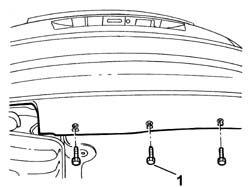
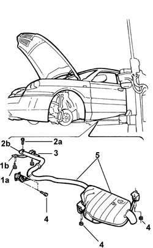

1076B20 Rear exhaust SILENCER - R.R.
- Path
- Procedures > 10 ENGINE > 1076 EXHAUST PIPES AND SILENCERS > 1076B EXHAUST PIPES AND SILENCERS > 1076B20 Rear exhaust SILENCER - R.R.
- Kind
- repair procedure (removal / refitting; the operation number is the code)
- Applies to
- engines: 2.4 JTD 20V; all production periods
- Interactive page
- https://sloeber94.github.io/elrnDB-lThss/en/#/850745
Applies to: engines: 2.4 JTD 20V; all production periods
 Removing
Removing
 Refitting
Refitting- Position the vehicle on a lift.
1. Undo the lower bolts fixing the rear bumper to gain access to the bolts fixing the rear mounting brackets.

Applies to: engines: 2.4 JTD 20V; all production periods
1. Undo the fixing bolts (1a) and remove the reinforcement bracket (1b).
2. Undo the bolt (2a) fixing the metal collar (2b).
3. Release the pin from the rubber mounting on the bodyshell.
4. Undo the bolts and the nuts fixing the exhaust pipe brackets.
5. Remove the rear exhaust silencer.

Applies to: engines: 2.4 JTD 20V; all production periods
Refitting
Removing- Join the rear silencer to the exhaust pipe using the metal band.
- Tighten the bolt fixing the metal collar.
 | Value - daNm | Fastening | Component | Ø |
|---|---|---|---|---|
. | 4.5 | Nut | REAR SILENCER EXHAUST | M10 X 1.25 |
- Tighten the bolts fixing the mounting brackets to the bodyshell.
| Value - daNm | Fastening | Component | Ø |
|---|---|---|---|---|
. | 2.8 | Nut | EXHAUST PIPE MOUNTS/FASTENERS | M8 |
| Value - daNm | Fastening | Component | Ø |
|---|---|---|---|---|
. | 2.8 | Bolts | EXHAUST PIPE MOUNTS/FASTENERS | M8 |
- Fit the pin for the silencer in the rubber mounting.
- Fit the reinforcement bracket and tighten the fixing bolts to torque.
- Tighten the lower bolts fixing the rear bumper.
- Remove the vehicle from the lift.